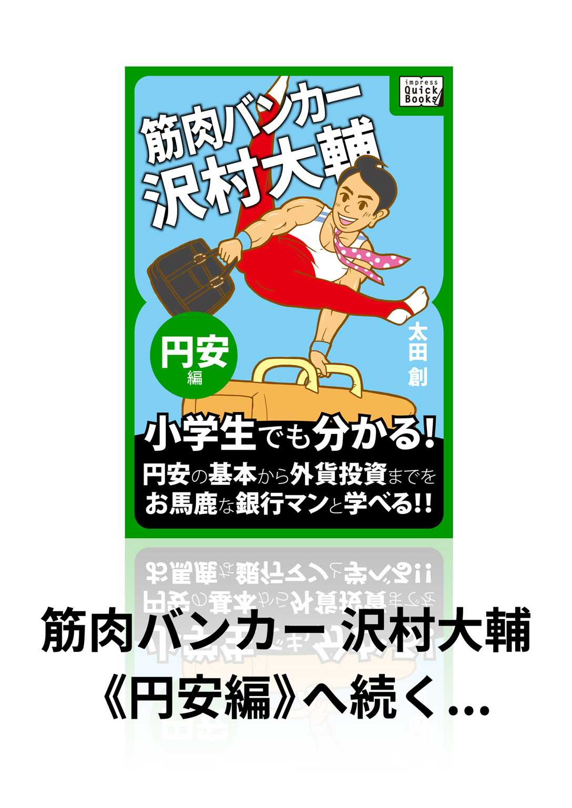

| 筋肉バンカー沢村大輔 《誕生編》 impress QuickBooks | |
| 太田 創 | |
| (2015) | |
第０章
東スポ大卒・関東帝国銀行入行
バンカー・沢村大輔の誕生
「あざーす！」
携帯電話から内定の声が聞こえた瞬間、大輔はお礼を言うと同時に、タタミ敷きの下宿部屋で屈伸バク宙を決めていた。体操部員なら誰でもできるＡ難度の基本技だ。だが着地の瞬間、わずかに左足首がずれた。
「いてッ！」
着地の瞬間、あの〝古傷〟が痛んだが、脳内からドバドバ放出されるアドレナリンで痛みは消し去られていた。
「マジっすか？ 東スポ大出身の俺が、て、天下の関東帝国銀行に内定...？」
しばらく放心状態でいると、次第に足首の痛みが脳に伝わってきた。
「この怪我のおかげで、こんな奇跡が起こちまった...」
左足首をさすりながら、大輔は思った。
そう、すべての始まりはあの大怪我だった。
＊
プルルルッ、プルルルッ、プルルルッ、プルルルッ...、関東帝国銀行人事部長・鶴岡和夫の電話が鳴った。鶴岡はこの電子音を聞くと、いつも額に汗がにじむ。ディスプレイを見ると〝Ｈ・ＭＡＫＩＴＡ〟となっている。予感は的中した。また牧田頭取からだ。
「はい、鶴岡です」
「牧田だが、例の件、どうなっとる？」
「やっぱりあの件か」と鶴岡は天を仰いだ。
「は、はい。鋭意取り組んでいます」
「鋭意...？」
「はい。つまり、そのぉ...、採用枠をもう一度広げ、各大学に再度働きかけて、最後の１名をなんとかしようかと...」
「鶴岡君、君は僕の苦しみを分かってないようだね。女房がうちの自由が丘支店と取引があるのは知っているよな」
「またか...」鶴岡は額と髪の境目からじっとりとでてきた汗を、よれよれのハンカチで拭いた。
「はい。自由が丘支店の支店長は、鈴木といいます」
「アホ！ 支店長の名前なんかどうでもいい。つまりだな、女房の担当者の...、ええっとなんと言ったけな...、高崎だったか高野だったか。とにかく、その担当者が女房を怒らせるんだよ」
「はいはい、何べんも聞いてますよ、頭取サマ...」と心の中で鶴岡は悪態をつく。
「昨日も30 分以上愚痴られた。おすすめの商品があるからと言って、話を聞いたら、生命保険を勧められんだと。女房は定期預金で十分と言っているのに、いつもホケン、ホケンと、この担当者、しつこいんだ！」
「それに、そこから話が飛んで、俺の味噌汁をすする音がうるさいとか、イビキをかき過ぎだとか、いろいろゴチャゴチャと毎晩うるさいんだよ。それもこれも、そいつが女房をいらつかせるからだ」
「頭取、なんなら私から、担当者を替えるよう鈴木支店長に言っておきましょうか」たまらず鶴岡は言った。
「もちろんだ。だがな、そういう問題じゃない。何べんも言ってるだろ。当行には、頭のいい奴はたくさんいるが、お客の話を聞けない奴ばっかりだ。もっと機転が利く学生を採れないもんかねえ...、機転の利く奴を」頭取の指示は重い。
「はい。今一度エントリーシートを精査して、再度〝機転の利く人材〟を選んでみます」と言ったものの、鶴岡はまったくあてがなかった。11 月、この時期には、翌年の新入社員全員に内定が出ている。かといって、いまさら落選した学生から採用するわけにはいかない。何とか牧田をやり過ごせないかと、鶴岡の頭はグルグル駆け巡った。
「で、鶴岡君、返事はいつまでにくれる？」
「この時期ではもう候補者は皆無でして、おそらく...」と言いかけたところで、牧田が爆発した。
「いいか、鶴岡君。四の五の言わずに、来週そいつを採用したことを報告するんだ。学歴なんかどうでもいい。とにかく機転が利いて、お客を満足させるスーパーな新人だ」
牧田はガチャッと電話を切った。
＊
朝６時に起きた後、下宿近くの駒沢公園を散歩しながら、深呼吸を数回。４月のこの時期は、乾燥した落ち葉の土臭さと新緑の香りが混ざって、公園中にマイナスイオンがあふれている。
大輔は、中央広場の地べたに座って１８０度開脚でストレッチをしながら、小柄な身体を前方に投げ出した。きれいな開脚前屈だ。手をまっすぐ天に突き刺し、ポーズ。
東京スポーツ大学（通称〝東スポ大〟）の体操部入部以来、このストレッチを毎朝続け、早朝ランナーの注目を浴びている。オリンピック選手を輩出している体育大学体操部の選手といっても、大輔はなんとかインカレで活躍できるレベル。大舞台に縁はないが、近所の市民ランナーには十分知られた存在なのだ。
大輔にとって、市民ランナーは憧れの的だ。駒沢公園１周２・１ｋｍのコースを４周も５周も走るのだ。体操選手が真剣に走る最長距離と言えば、せいぜい跳馬の助走23 メートルくらい。床運動の助走は最長12 メートル程度。大輔の長距離ランニングでは、駒沢公園の一般ランナーには軽く負けてしまう。いや、長距離ランニングはできないといったほうがいい。インカレ入賞は間違いないと言われているが、実に情けない。だが、体操選手にとっては心肺機能重視のランニングより、瞬発的な筋力を最大限に生かす、筋トレやストレッチのほうがより重要なのだ。
親の勧めもあり、大輔は野球もサッカーも少年チームでやったのだが、投げるのはダメ、蹴るのもダメ。要するに球技センスはゼロ。じゃあ、ということで水泳教室へも行かされた。平泳ぎはなんとかなったものの、クロールがダメで進級できなかった。
あれもこれもダメということで、小学校４年生のころから体操教室に通わされた。もちろん初めはでんぐり返りから始めたのだが、普通のチビッ子が何回もやると目と頭がぐるぐる回って、オエーっと吐きそうになるものだが大輔は別だった。何回でも回れるのである。前転でも後転でもオッケー。それに、身体が柔らかかった。台に立って膝を伸ばし、指先を下に伸ばすと、ぐにゃ～っと25 センチほど台の下へ。座って足を１８０度広げて身体を前に投げ出すと、床に身体がぺたっとくっつくのだ。まるでイカタコレベルの柔軟性があった。
毎朝、授業前に自主練でストレッチをこなすことなど、東スポ大体操部がインカレで全国制覇するための、ちょっとした努力でしかない。オリンピックは無理でも、インカレでは入賞を狙っている。
そう、大輔は得意の床運動で得点を狙っているのだ。10 メートルまでのダッシュ力とバク宙の技が決め手となる床で何とかなれば、種目別のインカレ入賞はまず間違いない。
大輔は床運動の大技である後方宙返り３回ひねり、〝サワムラ〟を持っている。この技、難度はＤ。インカレレベルでこの技をきっちり決められる選手はそんなに多くはないのだ。もっとも、これを自分だけの大技だと思い、大輔が勝手に命名しているのだが...。
大輔はこの〝サワムラ〟を試合で１回しか成功させていないのだが、その時たまたま見にきていた実業団のスカウトが、「実業団で鍛えれば、Ｅ難度以上の技も出せるかもよ。ウチでやってみる？」と言ってくれた。
もちろん、Ｅ難度やＦ難度の技が連発できればオリンピックも夢ではないのだが、残念なことに、今の実力ではちょっと厳しい。昨年のインカレで、Ｆ難度の前方宙返り３回ひねりに挑戦したのだが、着地の瞬間大きくバランスを崩し、そのまま床から飛び出し、隣で競技中の鞍馬に顔面を激突して、鼻血ブー。会場は一瞬静まりかえった。
こんなこともあり、大輔は今回のインカレでは無難に〝サワムラ〟で高得点を稼ぎ、チームに貢献することに決めたのだった。
だが、大輔は少しだけ〝サワムラ〟に改良を加えることにした。競技中に頭が下になっているところで笑顔とピースサインを出し、得点の加算を狙う〝サワムラⅡ〟だ...。男たるもの、リスクを取らないでどうする。人生は一度きりなのだ。
「監督、見ててください。〝サワムラⅡ〟で東スポ大を優勝させますよ」大輔はひそかに誓った。
＊
「ふうっ～」牧田との電話から解放され、鶴岡は大きく息を吐いた。新人採用がどうなるかは分からないが、とにかく牧田との会話はひとまず終わった。
毎年千人以上の新入行員が入行する関東帝国銀行の採用基準は、「学業成績優良」、「高いコミュニケーション能力」、「リーダーシップ力」の三本柱となっている。
「牧田頭取、おっしゃることは分かりますが、〝機転が利く〟というあいまいな基準で新人を選ぶわけにはいかないんですよ。採用はプロの私に任せていただけませんか」と、なぜあの時強く言い返せなかったのか...。鶴岡は内心じくじたる思いだった。
「ちくしょう、一言クギをさしておけば、頭取も諦めたかもしれない...」
だが、鶴岡は現実と向き合った。
「頭取の〝機転が利く〟って奴のイメージはこんなところなんだろうなあ。お客の話をよく聞いて、お客に愛され、お客の求める商品やサービスを的確に提案する...」
「でもなぁ、メガバンクにこんな奴がいたって、結局潰されるんだよなぁ」
鶴岡は自分のキャリアを振り返って、ため息をついた。
「銀行が望むのは、結局お客よりも〝上司の言うことをハイハイ聞く行員〟だからなぁ...。実際、俺がそうだし...」
とはいっても、牧田への報告には１週間の猶予しかなかった。鶴岡の頭はグルグル回転した。
「どうしたものか。落選者からはダメ、今から補欠採用も時間がかかる、ん～、誰かいないものか...」
「だが、待てよ。新人１人を採用して、頭取のイライラがおさまれば、俺の評価は間違いなく上がる。悪くないゾ...。ひょひょ、ひょっとして、これは人事担当役員に上がれる絶好のチャンスだ...」
鶴岡は自分が描いたストーリーを自画自賛し、ほくそ笑んだ。
＊
鶴岡は神谷町のとあるビルにある、会員制高級スポーツクラブのランニングマシンで走っていた。ビルの裏手には銀杏並木が立ち並び、六本木一丁目駅から神谷町駅にかけての歩道は昼間でもうっそうとすることがある。付近にはその環境を生かした高級マンションが立ち並んでいる。
体重が90 キロ近くある鶴岡は、最近、医者に運動不足を指摘され、そのスポーツクラブに半ばイヤイヤ通っている。鶴岡は医者に「やせるために、まず走れ」と言われ、必ずランニングマシンで走ることにしている。銀行員らしく、医者という権威には弱いのだ。とはいうものの、２分もマシン上で走ると、息がゼイゼイ上がり、脈拍も１５０を突破しそうだ。鶴岡のまん丸い色白の背中からは汗が噴き出し、ヘッドバンドも湿ってきた。
「あ～、やだやだ。ここまでして痩せなければならんのか。俺はこれでも関東帝国銀行の人事部長だぞ。クソッ」鶴岡は悪態をついたが、マシンの音にかき消され、他の会員は知らん顔だ。
ただ、鶴岡が今日ここに来たのには別の目的があった。
鶴岡はパーソナルトレーナーをつけている。自分でトレーニングメニューを組むは面倒だし、どの程度やっていいかも分からない。そのジムに入った時から、鶴岡は日下部というトレーナーに面倒を見てもらっている。受付によると、日下部は東スポ大出身らしい。
「今日はちょっとしたお願いをしてみよう」と鶴岡は考えていた。
日下部はトレーナー歴７年のベテラントレーナーで、関東ボディビル選手権で入賞したこともあるマッチョ君だ。なで肩の上半身はあらゆる部分が筋肉で隆起し、胸板と腹筋はまるでヘラクレスのようだ。ただ上背がないので威圧感はなく、平身低頭で会員受けはいい。
30 分ランの後には、日下部がコーチングする筋トレだ。それが終わると、ストレッチで身体をほぐして１回のメニューが終わる。２週間ぶりのトレーニングなので、今日はかなりきつい。やれやれとウレタン製の厚めのストレッチマットに仰向けに寝た。マットは湿気を含んでいるので、鶴岡はいつもタオルを引いて使っている。手を胸の前に組んで天井を見ていると、ミネラルウォーターとトレーニングメニューを手に日下部が近づいてきた。
「鶴岡さん、どうでしたか。今日のトレーニングは？」
「いやぁ、ちょっときつかったかな。筋トレはさておき、ランニングがね。30 分のジョギングといっても楽じゃないね」
「でも、自主的に運動するなんて、さすがですよ」
「いや、実はさ、うちの頭取がいつも『運動しろ、運動しろ』って...。あぁ～っ！」と言いかけて、鶴岡は何かを思い出したように立ち上がり、話題を変えた。
「日下部クン、ちょ、ちょっと聞いてもいい？」
「は、はい。いきなり何でしょう」
「ところで、キミィ～、僕が東京帝国銀行の人事部長だって知ってたよねぇ？」
「は、はあ。もちろん...、です」
「人事部長ってさ、頭取から直接電話が入ることもあるんだよね...。キミィ～、このステータス、わかるかなぁ...？」
「すいません。それって、つまり...、鶴岡さん、かなり偉いってことですか？」
「キミィ～、よくわかってるじゃない...。そこで、だ。折り入ってキミに頼みたいことがあってね...」
日下部の耳元に口を寄せると、ようやく脈拍が落ち着いてきた鶴岡は小声で話した。
「来年の新入行員をあと１名、見つけなければならないんだ」
「新入...、行員ですか？」
「そう。たった１名なんだが、もう来年の採用は締め切ったし、いまさら数万人の応募者の中から選ぶわけにはいかないし、抽選もナンセンスだ。それに...」怪訝な表情を浮かべる日下部のことなどお構いなしに、鶴岡は続けた。
「今回の募集には頭取が絡んでいる。いや、正確には頭取の奥さんだ。日下部クン、このめんどくさい状況わかってくれるかなぁ～？」
「は、はぁ...、心中はお察しします。ただ...、すいません、正直、よく分かりません...」
「ま、まあ、それはいい。ところで...、キミの後輩で、まだ就職が決まっていない学生はいないかな？」
「わ、私の後輩で...、ですか？」
「そう。たしか、日下部クン、東スポ大の体操部出身だったよね」
「はい、その通りです。ただ、母校の就職先は、ほとんどが公務員か教員、スポーツ関係と決まっています。メガバンクなんて、とてもとても...」
「いや、あのぉ、日下部コーチを前にして言うのは何だが、今回の採用に頭はさほど必要ない。いや、いらない。不要だ！ とにかく機転が利いて、運動神経があればそれでいい」
「それって...、どうですかね？ 関東帝国銀行が超一流大学の学生しか採らないのは聞いてますが、スポーツだって頭なくしてできないんですよ？」日下部の目尻が一瞬つり上がる。
「いや、申し訳ない。そういう意味じゃなくて...、オツムのレベル...、いや偏差値...、じゃなく...。いや、ホント。これ、マジよ。と、とにかく元気で飛び回って、お客さん受けがよければ...。その、今回は顧客満足度というか、イケてる学生というか...」鶴岡はしどろもどろで、血流が頭に上がるのを感じた。
「ほ、ほんとね、日下部君。頼みますよ...。もしここで取っ掛かりを見つけないと、３日後の頭取とのミーティングで、またどやしつけられるのヨ」
「そうですか、そこまでおっしゃられるのであれば...」日下部はとなりのプールで泳いでいる若い女性客を目で追いながら、頭をひねった。
＊
大輔の講義は３時限目からだった。大輔は「かったるいなあ」と思いつつ、下宿で講義の準備をした。体操部員とはいえ、講義をおろそかにしていては進級できない。担当教授の前で、床の大技〝サワムラ〟を披露しようとも、講義にちゃんと出席し、テストに合格しなければ落第するのだ。東スポ大の進級基準は意外と厳しい。かつては講義に出なくても、大会で好成績を残していれば無試験で卒業できたらしいが、いまやそれはおとぎ話となっている。
大輔は足取り重く、その講義に向かった。早朝の開脚前屈で市民ランナーの熱い視線を浴びた後、一応３時限目の「身体統合機能Ⅰ」を予習したのだが全く頭に入らなかった。
細かい筋肉の名前を、漢字で覚えなければならないからだった。体操一筋の大輔は、自分の名前を正確に漢字で書けるようになったのも、中学に入ってからだった。大輔にとって、漢字はバク宙と同じく、イメージが頼りである。大輔は深呼吸した。
「よし、人体は６００を超える筋肉から成り立っている。その一つ一つに名前がついている。まず、腹筋、背筋、側筋からはじめよう」
そのパターンで前期試験の筋肉名称を答えるテストに臨み、上半身の３つの筋肉しか知らない大輔はすべてこれで通した。当然結果はお情けの「Ｃ」だった。
大輔はいつも思う。どうして筋肉名はこんなに難しいのか。脊柱起立筋、腸脛靱帯、腕橈骨筋...。こんなのが６００もあるのかと思うと、大輔には耐えられない。将来はスポーツトレーナーになることも考えたが、試験のことを考えると、一挙にモチベーションが低下した。これ以上漢字で筋肉名を覚えるのはムリだ。
大輔は憂鬱な気分で下宿を出て、駒沢通りに向かった。駒沢公園近くの大学には、歩いて10 分ほどの距離なので、筋肉の名前をブツブツ言いながら歩いた。
「セキチュウキリツキン、セキチュウキリツキン...」
「チョウケイジンタイ、チョウケイジンタイ...」
「ワントウコツキン、ワントウコツキン...」
「だ、ダメだ。コリャ、ダメだ。全く頭に入らない」
筋肉を動かすことは得意だが、筋肉の名前はどうしても覚えられない。カタカナではなおさらワケがわからない。歩きながら、大輔は次第に頭がぼ～っとしてきた。
深沢不動の交差点で駒沢公園通りを渡り、駒沢通りを西に大学に向かっていると、保育園児が保母さんに連れられて散歩中だった。このあたりは、駒澤大学駅からも等々力駅からも離れている、閑静な住宅街とこぢんまりしたお店が建ち並ぶ地域だ。近隣の保育園児や幼稚園児は、駒沢公園で遊ぶのが日課となっている。
「チビッコはいいよな。この頃から体操をやれば、どんな技でもできるようになるだろうな」大輔は心底、チビッ子をうらやましがった。
角に大きなマンションがある交差点で、大輔と保育園児達が横断歩道を渡ろうとすると、信号が赤に変わった。大輔はチビッ子集団に飲み込まれ、一緒に青信号になるのを待つことになった。
「おい、シュウジ。青になったらカケッコな」丸坊主の男の子が、チビッ子同士でカケッコをけしかけている。
「サトシ君、だめよ。青になっても急に飛び出したら、危ないから。みんな、わかった？」
保母さんは元気なチビッ子を抑えるのに必死だ。だが、チビッ子はワイワイキャアキャア言って、保母さんの注意が耳に入っているのかどうか分からない。もう一人の保母さんも、「気をつけてねえ～」と言い聞かせていた。
保母さんに注意されてチビッ子達はおとなしくなった。カウントダウン式信号が、もうすぐ青信号になることを知らせている。
赤から青になった瞬間、サトシ君は「いくぞ、シュウジ。ヨーイ、ドン！」と一気にダッシュした、それに遅れずとシュウジも続いた。
「コラァ、だめよ!! 」という保母さんの声。
その時、一瞬スタートが遅れたシュウジに、右折してきたタクシーが突っ込んできた。
「キャーーー！」
その瞬間、大輔は猛ダッシュ。素早くタクシーとシュウジに割って入った。全力ではたった23 メートルしか走れないが、10 メートルまでの加速ならなら部内イチだ。
走りながらシュウジを「ドン！」と両手で押し出すと、シュウジは歩道にごろんと転がった。
「よかった。あれなら擦り傷ぐらいだろう」その瞬間、ニンマリ。満面の笑みを保母さんに返した。横断歩道を走り抜けた後、タクシーもそのまま大輔の後ろを通り抜けた...ハズだった。
「ドド～ン！」
「キキーッ！」
タクシーが大輔にぶち当たった音と急ブレーキの音が重なった。大輔は10 メートルくらい吹っ飛んだ。
「あ、あ、あ、あ、あ...」保母さんの目は宙を舞っている大輔を追っていた。一瞬だが、それはコマ送りのスローモーションのようだった。
吹っ飛ばされた衝撃で記憶が飛びかけたが、無意識のうちに両手で頭をブロックしていた。
「こりゃ、複雑骨折だな...」
消えゆく意識の中で、左足首がジンジン痛んでいることだけは覚えていた。その時、インカレの夢は儚く散った。そして、実業団で活躍することも...。
＊
「ん～...。そ、そういえば、こんな奴でもいいですか？」
「体操部の後輩なんですが、床が得意な奴がいます。団体戦ではそこそこの戦績なんですが、ＰＣもスマホも使えないし、学業成績は落第ギリギリで、今４年生です」日下部は続ける。
「実業団から声がかかっていて、インカレで入賞すれば内定だったのですが、ちょっと怪我をしましてね」日下部の顔が曇った。
「ほう、そりゃ残念。一体どうしたの？」鶴岡は水を口にしながら聞いた。
「子どもを助けようと、横断歩道に突っ込んできたタクシーの前に飛び込みましてねぇ。子どもを助けたのはいいのですが、吹っ飛ばされて左足を複雑骨折ですよ。インカレ直前に残念です」
「足はいいとして、その彼、肝心の頭は大丈夫だった？」
「なんとか。吹っ飛ばされましたが、頭は打ちませんでした。でもね、鶴岡さん。コイツ、インカレはダメ、実業団もダメでしょ。落ち込んでると思いきや、その後も毎朝、駒沢公園で早朝ランナーに１８０度の開脚前屈をやって見せて、ウケているらしいです」
鶴岡はポンと膝を叩いた。
「日下部君クン、彼だよ。まさにその彼だよ。交通事故から子どもを救う機転。怪我をしてもストレッチを欠かさない粘り。彼なら牧田頭取を黙らせられる。名前はなんちゅうの？」
鶴岡はやっと候補者を見つけ、ニンマリした。
「沢村大輔といいます。ただ、鶴岡さん...、アイツ、たしか漢字はあまり読めませんよ...」
＊
関東帝国銀行・青山支店の朝は早い。青山支店は国道２４６号線、通称・青山通りと表参道の交差点、地下鉄の表参道駅Ｂ４出口の前にある都内でも有数の大店舗だ。客数も都内でもベスト５に入り、支店の窓口が開く朝９時前には行列ができることもある。このため行員は７時半くらいから続々と出社する。
ＰＣの電源を入れ、自動現金管理システムを立ち上げ、帳票やゴム印などを整理整頓する。システムが自動的に立ち上がってくると、モーター音がカチャ、カチャと漏れ出し、ゴムローラーがこすれてかすかな臭いが漂う。それぞれの行員は、支店の大金庫からロネオと呼ばれる移動式引き出しを配置させ、ようやくこれでお客様を迎える準備ができる。
銀行の営業時間は朝９時から午後３時までなのだが、開店前の数10 分はお客様をお迎えするために、開店前の準備に余念がない。営業時間だけ見れば、銀行は楽勝な職場だと思われているが、実は観客に見えてない水中で身体を支えてゴールを狙う、水球競技のような職場なのだ。つまり、営業時間外で頑張っているのが銀行という職場である。
青山支店の朝礼は毎朝８時45 分から、支店長の訓示ではじまる。ＡＴＭコーナーはすでに稼働しているが、シャッターで遮られている１階ロビーで支店の行員全員が参加する。
１階ロビーは税金の収納や送金に使われるハイカウンターと、定期預金や各種相談に使われるローカウンターに分かれている。どちらも番号発券機が備え付けられ、お客をスムーズにさばくようになっている。
関東帝国銀行の各支店のレイアウトには大きな違いはない。１階がＡＴＭコーナーと営業課、２階が営業課や融資課だ。店内はグレーの色調で統一され、フロアも同系色で統一されている。ＡＴＭコーナーは頑丈な作りで、フロアにはカーペットは引かれていない。ＡＴＭコーナーでなぜか傘置きが目立っているのは、雨天時にフロアが滑りやすいため、傘は傘置きに入れてほしいというメッセージである。
「事に敏にして言に慎み。今日はこれで行こう！」支店長は締めた。
いつもながら白波支店長の訓示は難解だ。論語好きの支店長らしい訓示だったが、体操一筋だった新人・沢村大輔には、そもそも論語が何かさえ知らない。その後、朝礼は唱和で締めくくられた。
「いらっしゃいませ！」（続いて全員）「いらっしゃいませ！」
「ありがとうございました！」（続いて全員）「ありがとうございました！」
大野営業課長の発声に、大輔はひときわ元気に唱和した。
＊
左足首を複雑骨折し、そのまま体操部を引退していた大輔に、ＯＢの日下部から電話があったのは昨年の12 月だった。聞けば、あの関東帝国銀行で新卒入行者を１名だけ探しているとのこと。細かい経緯は話してもらえなかったが、「俺の顔をつぶさないでくれ」と頼まれ、なんとなく面接を受けたのだった。
怪我をした後も、大輔は毎朝駒沢公園でストレッチを繰り返し、市民ランナーと交流を深めていった。卒業後は個人トレーナーでもやっていこうかと考えていた矢先に、降ってわいたような話だった。もちろん、面接には何の準備もできなかった。
大輔にとって、面接は青天の霹靂だった。もちろん、本気にはできなかった。関東帝国銀行と言えば、日本、いや世界を代表するメガバンクである。重役連中も東大を始めとする一流大学出身者のみ。その銀行が、東京スポーツ大学出身の自分に面接するなど、冗談以外の何者でもなかった。
面接は、暮れも押し迫った12 月20 日に、丸の内の関東帝国銀行本店で行われた。丸の内から大手町にかけての界隈は、日本の大手企業の本社が軒を連ねている。地下鉄を乗り継いで丸の内にたどり着いた大輔は、慣れない濃紺のリクルートスーツに身を固めていた。手が小刻みに震え、目尻が引きつっているのを感じていた。
本店の入口を入ると、大輔は高さが20 メートルくらいある吹き抜けのロビーと、ローカウンターが20 近くも並んでいる豪勢な本店に圧倒された。客数は少なく、物静かで重厚感をある財閥系の超一流銀行本店の雰囲気がさらに大輔を不安にさせた。１階の受付で面接の旨を告げ、入館証バッジを受け取り、左胸ポケットにつけた。
「どうしよう。俺、大丈夫かな。金融のきの字も知らないしなあ。かといって、日下部先輩の顔に泥を塗るわけにはいかないしなぁ」
面接会場は９階の６番応接室ということで、大輔は一番奥のお客様専用エレベーターに乗り、〝９〟を押した。エレベーターを降り、９階の６番応接室に向かった。
「ううッ、寒！ なんだ、この部屋、あまり暖房きいてないな...。それに、ちょっとこの応接室、少しカビの臭いが...」がらんとした応接室に入った大輔は、一層不安になってきた。
「どうしよう。寒いしなあ、トイレどうしようかなぁ」とりとめのないことを考えながら、コートを脱ぎ、ソファーの右側に置いて、面接官の到着を待った。ソファーは革製なのだが、使い込んでいるせいか、ところどころ皮が薄くなって変色していた。
「さすが、関東帝国銀行。ソファーも年代物を使っているのか」大輔は変なところに感心した。
面接は午後２時からのスタートの予定だ。
「コンコン」
時間通りに、１人の面接官が応接室に入ってきた。
「あ、人事部長の鶴岡で～す」面接官は自己紹介した。
大輔は立ち上がって、一礼し、「沢村大輔と申します。本日はよろしくお願いします」と言ってソファーに座った。
ヒヤっとしていた応接室は、鶴岡がソファーの１人半分のスペースにどっかり腰をおろすと、むしろ暑苦しい感じになった。
「キミのことは、日下部君から聞いたよ。君の先輩の日下部君ね、実は私のパーソナルコーチでね。彼のおかげで、ここ最近かなり痩せたんだよ」鶴岡はまん丸い顔で言った。
「ところで...、キミィ、大怪我をしたんだって？」
「はい、残念です。インカレ前に交通事故で左足首を骨折しました」
「でも、キミィ、偉いじゃない。子どもを助けたんだろ？」
「いや、まあ...。ほとんど何も考えずに飛び込みました。そして、吹っ飛びました...」
「いやあ、スゴイ。確かにスゴイ。機転が利く とは、このことだよ。ワッハッハッハッハッハ...」鶴岡はなぜか上機嫌だ。
「ところで、キミィ...、ケータイの番号、教えてくれるかな？」
＊
「あざーす！」
大輔は下宿の六畳間で、思わず屈伸バク宙を決めた。
年末ギリギリの12 月30 日、人事部長の鶴岡が携帯に合格の連絡をくれたのだった。
「て、天下の関東帝国銀行だぜ！」
「だが...、待てよ」大輔の脳裏には一瞬不安がよぎった。
「銀行の仕事って何をするんだろう。ひょっとしてＦ難度の前方宙返り３回ひねりより難しいんだろうか。それに俺、金融のことは全然わからないしなぁ...」
鶴岡は電話口で、「おめでとう。関東帝国銀行の歴史上、東京スポーツ大学出身者はキミィ、ひとりだけだよ。とにかく、キミィの役目は機転を利かせ て、お客を喜ばすことだ！」と言った。大輔は何を期待されているのか、よく分からなかったが、「体操の経験を生かして、床運動でピョンピョンやればいいのかな!? 」と軽く考えることにした。
そうこうするうちに４月１日の入社日となった。大輔は着慣れないスーツに身を包み、東京・丸の内の関東帝国銀行の本店に向かった。集合場所は地下２階の大講堂だ。正面ロビー右側に設置されているエレベーターには新人が列をなしていた。各有名大学から選抜された新人達の顔はキリッと引き締まりながらも、どこか余裕を感じさせる不思議な雰囲気が漂っている。
「こんなすごい人たちと仕事できる。僕はなんてラッキーなんだ」大輔は感激した。
その後、入社式は淡々と進み、最後に頭取からの訓示となった。人事部長の鶴岡が大きな声を張り上げた。
「それでは、関東帝国銀行頭取・牧田久雄が、本年の新入社員へのメッセージを送ります。全員、起立！」
＊
関東帝国銀行に入行し、大輔は都内の青山支店に配属された。そこには新人として大輔と、山田竜也、藤川めぐみの３人が配属された。細身にチタン製のメガネが似合う東大出身の山田は早々と融資課の担当者となり、バレーボールをやっていた長身の藤川は営業課の期待の新人として、今日も店頭で愛敬を振りまいている。
山田は総合職採用だ。総合職はどんな職種でも地域でも活躍が可能な、いわば将来のエリートを期待されている職種での採用だ。めぐみはアシスタント職という地域限定採用で、都内出身のめぐみは転勤がない。大輔は〝総合特定職〟というビミョーな職種で採用された。人事部長の鶴岡からはプロフェッショナルを目指す職種と聞かされていた。
「プロフェッショナルを目指す職種か。俺も床運動のプロフェッショナルだったからな」
スマホもＰＣも、そろばんもできないにもかかわらず、大輔は自信満々だった。青山支店長の白波もそれを心得てか、営業課所属になった大輔に「機転を利かせて、お客様を喜ばせるプロフェッショナルになれ」と指示をした。
大輔は心底銀行に入って良かったと思った。なんなら、バク宙でお客様を喜ばせることができるからだ。
「支店の仕事といえば、預金の入出金や振り込み、融資業務などあるが、意外にも力仕事が多いんだよ。たとえば、営業前に支店周りを掃除することや、９時の開店とともに支店の入口で客に挨拶を行うこと、大口顧客にジュラルミンケースで現金の集金に行くなど...。こういった仕事は新人のキミの役割だからね」営業課長の大野誠は、オリエンテーション・ミーティングで大輔に説明した。
「大野課長、新人として、こんな心構えはいかがでしょう」大輔は大野に尋ねた。
「ひとり１つしか運べないジュラルミンケースなら、沢村大輔なら２つ、いや３つ抱えて集金する、というのは？」大輔はまじめに答えた。
「悪くはないなあ。でもな、ジュラルミンケースいっぱいにお札入れたら、何キロになると思う？ 沢村クン？」
「しまった！」大輔は重さを失念していた。
「新札だったら、１億円で約10 キロ。ジュラルミンケースには２パックは入るから、２億円で20 キロだな。それ、３つも持てるか、沢村クン？」大輔は焦って、顔がほてってくるのが分かった。
「すいません、ちょっと厳しいかもしれません...」
「そうそう、無理しなくてもいいよ。無理して強盗に襲われても意味ないでしょ」
「そういえば、沢村クン。きみ、体操部出身なんだって？ そんなに力自慢だったら命名してあげるよ」大野はニヤニヤしている。
「今日からキミのニックネームは〝キンニク〟だ！」
＊
「あざーす！ それではここで関東帝国銀行・青山支店の〝キンニク〟こと沢村大輔が、皆様を歓迎するために、筋肉ウェルカム体操をおこないま～す！」
９時の開店と同時に、いきなり大輔の威勢のいい声が１階のフロア全体に響き渡った。事情を知らないお客さんは一瞬ギョッとするが、常連で近隣のおじいちゃん、おばあちゃん客には好評だ。わざわざスポーツクラブに行かなくても、朝一番に銀行で体操ができるのが評判となっている。
「それでは、ゆっくり屈伸から、ハイ、イチ～・ニイ～・サン～」
中には80 過ぎのおばあちゃんもいるため、ペースは自然と超スローになる。深く膝を曲げられないのは仕方がないので、お年寄りはとにかくゆっくりやるのがいい。
「はい、次は手首をブラブラさせましょう。はい、またゆっくりブラブラブラ～」
これには順番待ちのお客さんもベンチに腰掛けながら、ブラブラやっている。最初は奇妙な目つきで大輔を見ていた客もブラブラしはじめている。
「では、最後に私の方から皆さんにプレゼントで～す！」といいながら、大輔はフロアの奥に向かった。それが〝あれ〟を始める儀式なのだ。
「えいっ！」と、大輔はいきなりバク宙をし始めた。１回転、２回転。フィニッシュは３回転目だ。ひときわ大きく見える回転で、頭が下になったところで...、
「いらっしゃいませ～！」
キマった！
後方バク宙が決まった。笑顔で挨拶するバク宙ができるのは、日本広しといえども大輔しかいない。この儀式を筋肉ウェルカム体操の後に入れるには、かなり勇気が要ったが、力仕事を任されている手前、これは大輔が精一杯できる貢献だった。
体操が終わった後、常連客のおばあちゃんが大輔に近寄り、「毎朝、すいませんねぇ」と声をかけ、ＡＴＭコーナーに向かっていった。このおばあちゃん、髪を薄い紫色に染め、いつも和服姿で来店するので大輔は顔を覚えているが、なぜかいつも朝早くＡＴＭコーナーに向かうのが常だった。
「いつも綺麗にしてるなあ。遠方からには来ているようには見えないし...。誰だろう、後でめぐみちゃんに聞いてみよう。でも、おばあちゃん、なんで手に携帯を持ってＡＴＭを使うのかなあ？」
大輔は不思議に思ったが、「あざーす！」と元気よく挨拶し、そのまま後姿を見送った。
「キンニクはいいよなぁ～。朝から体操するだけでいいんだから...」と、１階に下りてきた同期の山田達也が話しかけてきた。右手でチタンフレームのメガネを調節しながら、長身からキリッとした視線を繰り出す。
「俺なんかさぁ、新人なのに融資課に配属だろ。担当先も50 社くらい持たされて、毎日残業ばかりだよ」
「手形貸付に手形割引。それに会社の財務諸表も読まなきゃダメとなると、いくら時間があっても足らないよ」
山田は「お前には無理だろな」と言いたげである。
「そりゃ、すごいじゃない。でも僕は力仕事しかできないので、まずは得意な体操でお客様をつかもうとしてるんだ。これもサービスだしね」
「ところで、山田君、東大出身なんだってね。俺ね、東スポ大出身！ 同じエリート同士、頑張ろうぜ。ワッハッハッハッハ！」
そう返された山田は、再び大輔に冷たい視線を返した。
「それはそうと沢村君、金融法務とかコンプライアンスとか、勉強しておいたほうがいいかもよ。君もいつかは融資課に配属かもしれないし...」山田のアドバイスは薄ら寒い。
「たしかにそうかもね。でもキンユウホウムとか、コンプライアンスとかって難しいんでしょ？」
「いいや、僕は東大の金融ゼミ出身なので、そんなに難しいとは思わないな～」山田はさらっと言う。
「ついでに、日経新聞も毎日読んだほうがいいよ...」
「ニッケイシンブン...？」
「あのさ、常識だろ。メガバンクの行員なら、日本経済新聞を読むのは...」山田の目は冷ややかだ。
「ゴメン、山田君、僕はちょっと漢字が苦手で、スポーツ新聞が精一杯さ！ 今度、読み方、教えてくれる？」
「......。わ、わかった。じゃあ、俺そろそろ行かないと」山田は肩をすくめ、２階の融資課に踵を返した。
「マズイ！」大輔は思った。
「山田は東大出のエリート。自分も元スポーツエリート。全く差はないが、関東帝国銀行では、どう考えたって分は悪い。何とかせねば...。しかし、いまから山田の真似をしても追いつけるはずはない。どうしよう...」あまり回らない頭でいろいろ考えていると、ますます訳が分からなくなってきた。
「よし、気分転換だ」
そう思った大輔はストレッチすることにして、１階の給湯室に向かった。
そこには藤川めぐみがいた。どうやら営業課長にお茶の準備をお願いされたようだった。
「沢村くん、おはよう！ いつもの体操、お客さんに大評判よ」長身の藤川は少し紅みがかった頬を大輔に向けた。
「でも、大野課長、ひどいわね。沢村君を〝キンニク〟なんて...」
「いやあ、いまのところ僕はこれくらいしかできないので、お客さんに喜んでもらえれば...。それにニックネームも悪くないしね」大輔は藤川に照れ笑いした。
「でもね、沢村君の体操が好きなおじいちゃんおばあちゃん多いのよ。それに、社長さん連中にも評判よ」藤川の大きな胸が一瞬揺れた。
「そ、そう。ありがとう。しばらく続けてみるわ」大輔は藤川が営業課に戻った後、フロアを借りてストレッチを始めた。いつもの１８０度開脚前屈でポーズ！ キマった！
大輔はそそくさと立ち上がると、青山支店の入口に向かった。午前中はお客様誘導係として、挨拶をすることになっているからだ。大きな声で「あざーす！」を連呼する。
青山支店界隈は都内でもオシャレな場所として知られているが、昔ながらの個人客や新興企業も入り交じるビジネスエリアでもある。若手ビジネスマンも多い。その中で挨拶を連呼するのだから、並大抵の神経ではつとまらない。
大輔が挨拶を続けていると、黄色いスーツに黒シャツでオールバック、右手にグリーンのセカンドバッグを持った中年男が青山支店に向かってきた。嫌な予感がした。ひょっとするとアチラの住人かもしれない...。大輔は身構えた。いや、何事もなかったかのように視線をそらし、中年男が通り過ぎるのを待った。
意に反し中年男は、まっすぐ大輔に向かってきた。「やばい、こっちに来ないで～」そう思った大輔は支店内に戻ろうとしたが、その矢先中年男に声を掛けられた。
「あの～、すんまへん」
「は、はい」と大輔。
「お宅はん、ここの銀行の方？」中年男の物言いはぞんざいだ。
「すんまへんけど、白波支店長おられまっか。今日はアポなしやさかい、突然おじゃましてもなんでっしゃろ」
大輔はそのいでたちから、この中年男をやっぱりあの世界の住人だと思った。背中に観音様が常駐している、その筋の人だ。
「ひょっとして、この支店もその世界と関係があるのか...」大輔は自問した。
「いやいや、そんなことはない...」と頭を横に振りながら、大輔は声を絞り出した。
「し、失礼ですが、お客様、お名前をお伺いしてもよろしいですか？」
「な、なんやアンタ、新人か？ 俺はなあ、もうこの支店と20 年取引してんねんで。ワイはなあ、藤澤亮介ちゅうもんや」大輔の身体が固まる
「も、申し訳ありません。それでは今、支店長につないでまいります」
「慌てんでエエでぇ～。そんなに急いでへんしな。今日はお宅から10 億円ほど借りよう思て、突然来社したワケや。もし貸してくれるんやったら、アンタの成績にしたらよろし」
大輔は藤澤の言っていることがよく分からなかった。
「あれ？ 銀行では金を貸すと営業成績になるのかな？ あれ、借金って悪いイメージあんだけどなあ...」大輔は混乱した。
「それと...」と藤澤が続ける。
「ひょっとして毎朝、支店のフロアで体操してるちゅう子は、アンタか？ エエ根性しとるの。ワイはそういうの好っきゃで。がんばりや。名前はなんちゅうの？」藤澤はニンマリして、大輔を見た。
「はい。沢村大輔と申します。あざーす！」
大輔は慌ててポケットから名刺入れを取り出し、慣れない手つきで藤澤に名刺を差し出した。
「わざわざすんまへんな」藤澤もセカンドバッグから名刺を取り出した。
「ワイな、君のその〝あざーす！〟ちゅう挨拶な、好っきゃで」そう言うと、藤澤は支店の入口に向かった。
「あざーす！」大輔の礼に藤澤は振り返らず、左手を挙げて支店に入っていった。
受け取った名刺には、「～貸しビル・不動産のことならおまかせ～ 株式会社藤澤商会 代表取締役 藤澤亮介」とあった。

著者紹介
太田 創 （おおた つくる）
１９８５年、関西学院大学経済学部卒。同年、三菱銀行入社。１９９０年より法人・個人の資産運用業務に携わり、以来、三菱東京ＵＦＪ銀行、シティグループ（米）、ＵＢＳ（スイス）、フィデリティ投信（米）などの国内外金融機関に勤務。主な著書に『ＥＴＦ投資入門』（日経ＢＰ社）、『お金持ち入門』（共著・実業之日本社）がある。
筋肉バンカー 沢村大輔《誕生編》
発行日 平成27 年９月１日
著 者 太田 創
発 行 Impress Business Development LLC
東京都千代田区神田神保町１―１０５
（本の内容に関するお問い合わせ先）
quickbooks_info@impress.co.jp
発 売 株式会社インプレス
Copyright© 2015 Tsukuru Ohta All rights reserved.
イラスト ＮＡＯＱＵＩ http://naoqui.themedia.jp/
制作 株式会社ＩＣＥ